LBPM MRT GPU Simulation
This guide provides step-by-step instructions for running Lattice Boltzmann for Porous Media (LBPM) single-phase (MRT) permeability simulations on x86 GPUs using the Digital Porous Media Portal (DPMP).
Launch the Application
-
Log in to the DPMP and navigate to the
My Dashboardinterface.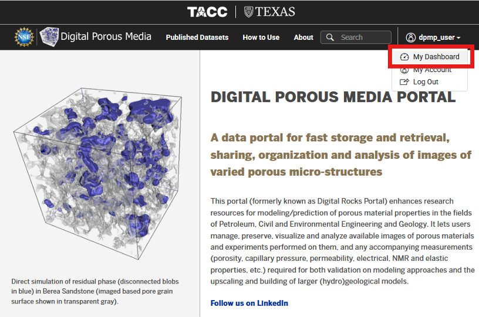
-
Navigate to the
Applicationstab in the left-hand menu (1). Then, navigate to theSimulationcategory (2). Click onLBPM MRT GPU (Lonestar6)from the list of available simulation applications (3).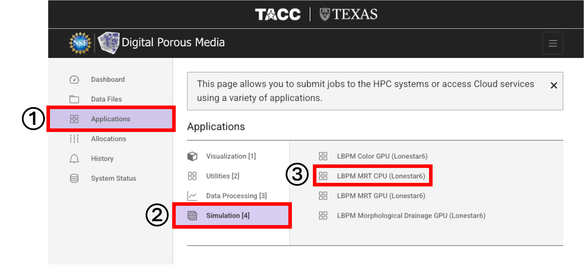
Inputs
-
Under
Inputs, clickSelectnext toInput Fileto browse for the input database (.db) file for the LBPM simulation.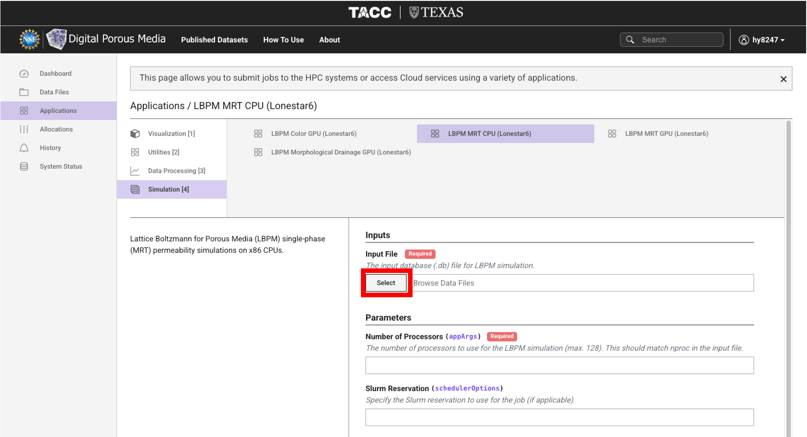
-
Navigate to the file location and select the input file.
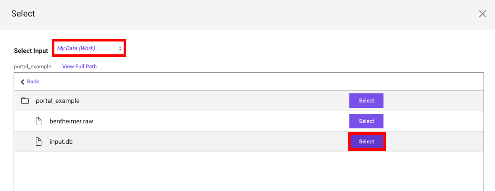
-
Below is an example
input.dbfile for a single-phase (MRT) LBPM simulation. In this example,nprocis set to1, 1, 1, for a total of 1 processor.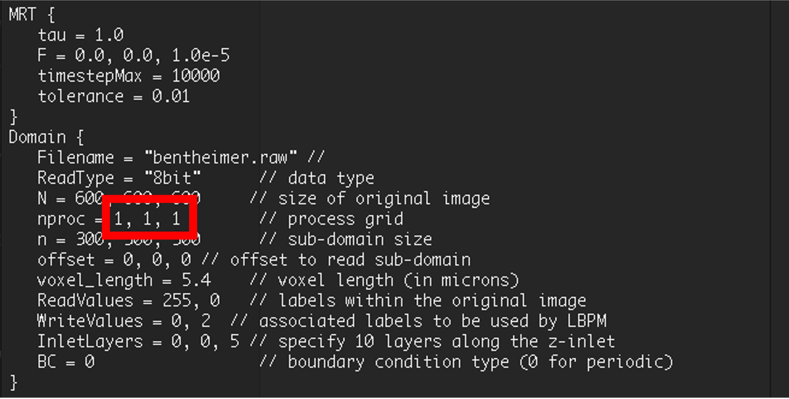
Parameters
-
Enter the
Number of Processorsfor the LBPM simulation. This value must matchnprocin the selectedinput.dbfile.- In this example,
nproc = 1, 1, 1, so the number of processors is1.
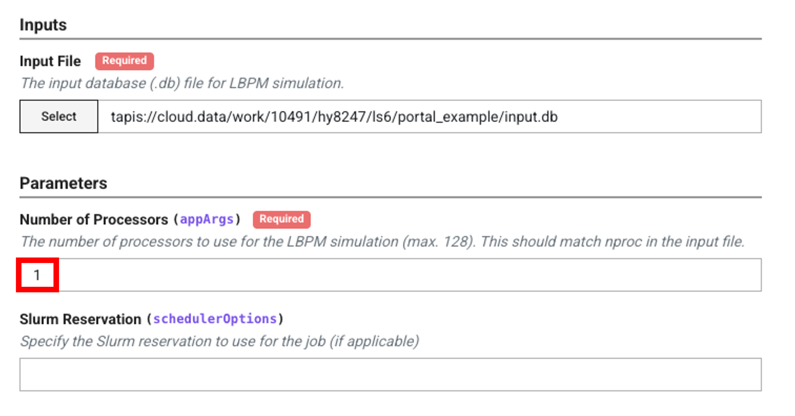
- In this example,
Note
The number of processors cannot exceed 128.
Configuration
-
Select the
Allocationyou would like to use for this job submission, then select theQueuethis job will execute on.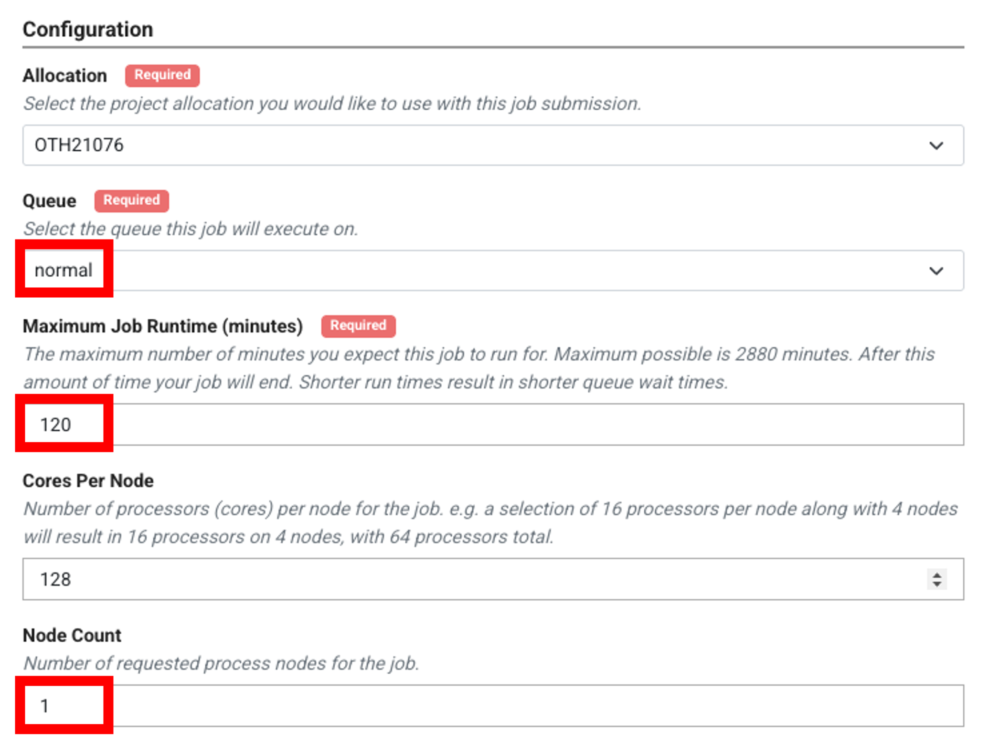
-
The current status of queues on Lonestar6 (idle nodes, running jobs, and waiting jobs) can be found at
System Status > Lonestar6.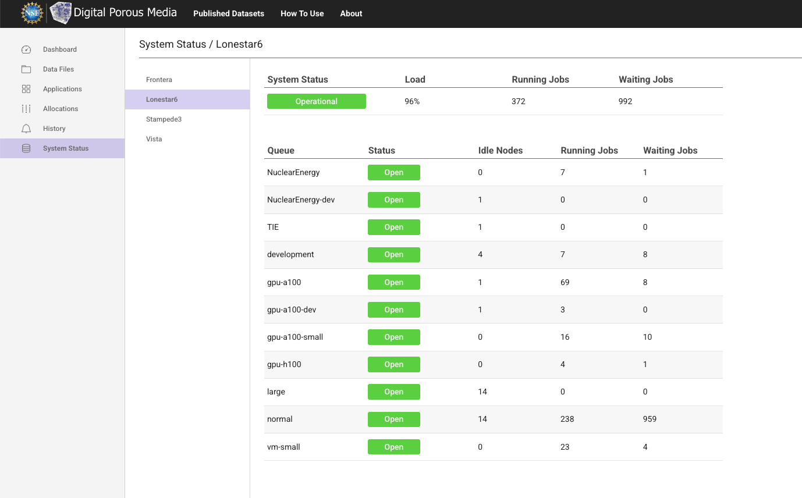
-
A detailed description of available queues on Lonestar6 can be found in the TACC Lonestar6 documentation.
-
-
Set the
Maximum Job Runtime,Cores Per Node, andNode Countfor the job.
Outputs
-
Enter a
Job Name, and specify theArchive SystemandArchive Directorywhere output files will be stored after the job completes. Click Submit. The defaultArchive System, cloud.data, points to the$WORKfile system on Lonestar6. The defaultArchive Directorycreates a folder namedtapis-jobs-archiveunder the user's$WORKdirectory, where output files can be found after the job completes. To archive outputs to a different location within$WORK, provide the absolute path to the desired directory, for example/work/usergroup/username/ls6/my_output_folder, in place of the default. To archive outputs to$SCRATCHinstead, set theArchive Systemtols6and provide the absolute path to the desired directory on the$SCRATCHfile system.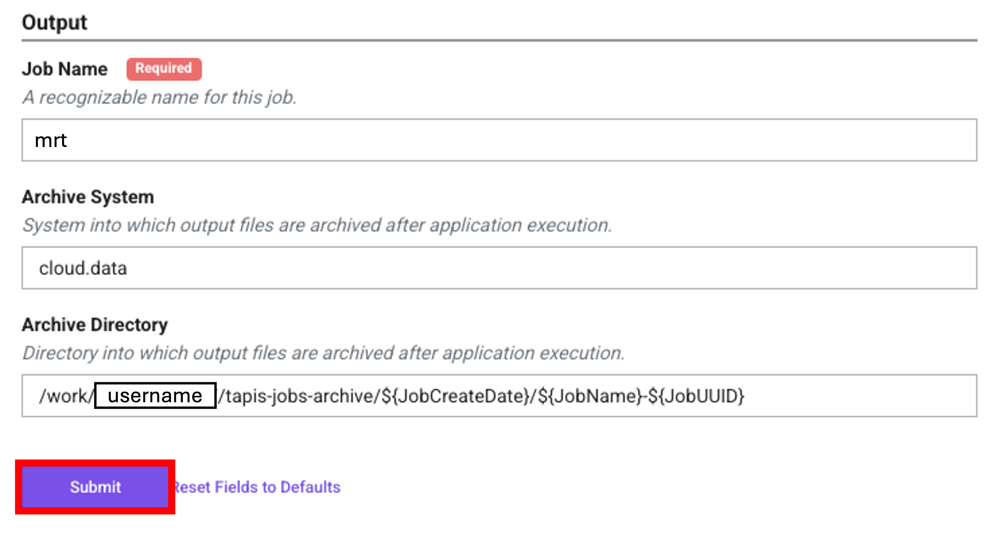
-
Once submitted, you will see a confirmation message.
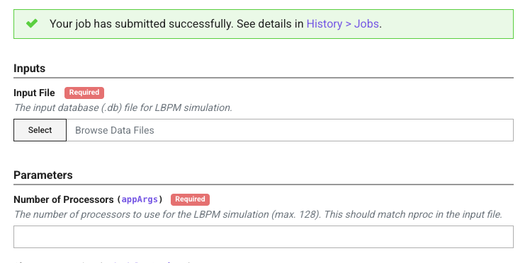
Monitor and Retrieve Results
-
Navigate to
History > Jobs, find your job byJob Name, and clickView Details.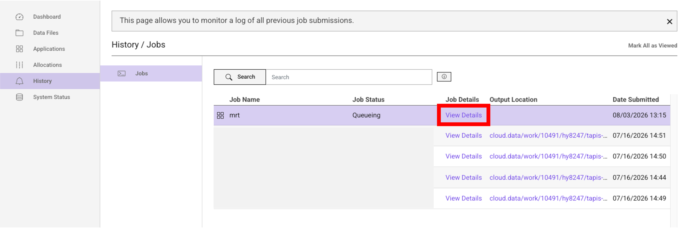
-
In the job details panel, click
View in Data FilesunderOutputto access your output files.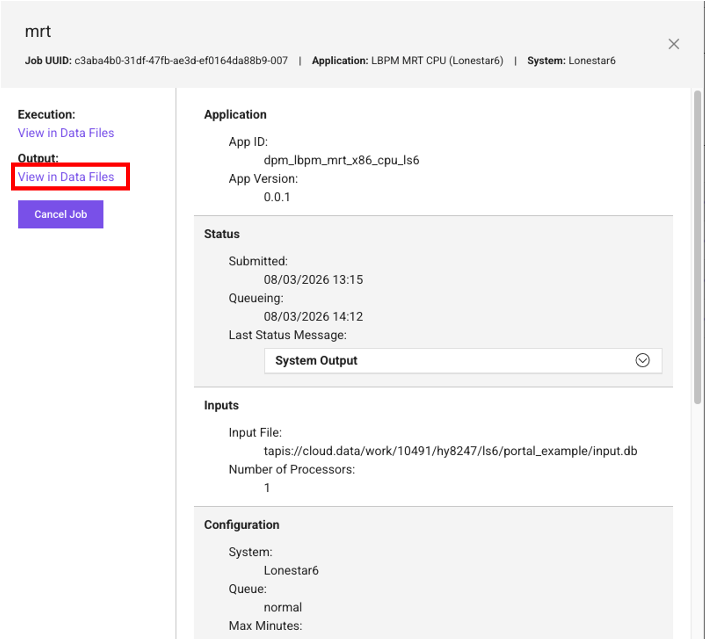